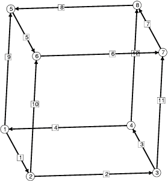

初始立方体骨架，顶点和边已编号。以下是定义初始单位立方体的数据文件：
// cube.fe // Evolver data for cube of prescribed volume. vertices /* given by coordinates */ 1 0.0 0.0 0.0 2 1.0 0.0 0.0 3 1.0 1.0 0.0 4 0.0 1.0 0.0 5 0.0 0.0 1.0 6 1.0 0.0 1.0 7 1.0 1.0 1.0 8 0.0 1.0 1.0 edges /* given by endpoints */ 1 1 2 2 2 3 3 3 4 4 4 1 5 5 6 6 6 7 7 7 8 8 8 5 9 1 5 10 2 6 11 3 7 12 4 8 faces /* given by oriented edge loop */ 1 1 10 -5 -9 2 2 11 -6 -10 3 3 12 -7 -11 4 4 9 -8 -12 5 5 6 7 8 6 -4 -3 -2 -1 bodies /* one body, defined by its oriented faces */ 1 1 2 3 4 5 6 volume 1 // end of cube.fe数据文件按行组织，每行定义一个几何元素。顶点（vertices） 必须最先定义，然后是边（edges），再然后是面（faces）， 最后是体（bodies）。每个元素都被编号，以便在数据文件中后续引用。
注释使用 /* 开始、*/ 结束（如 C 语言），
或从 // 开始直到行末（如 C++ 语言）。
大小写不敏感，所有输入都会立即转换为小写。因此，
关于数据文件的错误消息会以小写显示各项内容，
即使您输入的是大写。
数据文件的语法基于关键字（keywords）。关键字
VERTICES、EDGES、FACES
和 BODIES 标志着各自部分的开始。
注意，面不一定是三角形（这就是为什么它们被称为
FACES 而不是 FACETS）。
任何非三角形面都会通过在其中心放置一个顶点并连接
到每个原始顶点的方式自动进行三角化。
面不必是平面的。注意，边上的负号表示该边以与
EDGES 部分中定义的方向相反的方向遍历。
面的定向法线由通常的右手定则定义。立方体的所有面
都具有向外的法线，因此它们在体列表中都为正。
在定义体时，边界面必须具有向外的法线。如果某个面
的定义具有向内的法线，则必须以负号列出。
体被约束为体积为 1 是通过在体定义之后的关键字
VOLUME 及其后的体积值来指示的。
元素具有的任何属性（attributes）或特性（properties）
都在定义之后的同一行给出。
启动 Evolver 并使用以下命令行加载数据文件：
evolver cube.fe
您应该会看到提示符：
Enter command:
输入命令 s 来显示表面。
您应该会看到一个被对角线分成四个三角形的正方形。
这是立方体的前面；您是沿着 x 轴正方向看进去的，
z 轴垂直向上，y 轴正方向向右。
在大多数系统上，您可以使用鼠标操作显示的表面：
按住左键在表面上拖动鼠标可旋转表面；按 z 键可切换到
"缩放"模式，按 t 键切换到"平移"模式，按 c 键切换到
"旋转"模式，按 r 键回到"旋转"模式。将鼠标焦点置于
图形窗口内，按 h 键可查看操作选项的摘要。
您也可以在图形命令提示符下输入图形命令；
这对于精确控制很有用。图形命令提示符为：
Graphics command:
它接受一串字母，每个字母对表面执行一次视图变换。
最常用的命令有：
r 向右旋转 6 度 l 向左旋转 6 度 u 向上旋转 6 度 d 向下旋转 6 度 R 重置到原始位置 q 退出，返回主命令提示符尝试输入
rrdd 以获得立方体的斜视图。您所做的
任何变换在下次显示表面时将保持不变。现在输入 q
回到主提示符。
如果您使用 geomview 进行图形显示，请使用命令 P
选项 8 来显示，或者简写为 "P 8"。
Geomview 需要几秒钟来初始化。
您可以独立于 Evolver 地操作 geomview 显示。
每当表面发生变化时，Evolver 会自动更新图像。
现在进行一些迭代。输入命令 "g 5" 以执行
5 次迭代。您应该会看到如下输出：
5. area: 5.11442065156005 energy: 5.11442065156005 scale: 0.186828 4. area: 5.11237323810972 energy: 5.11237323810972 scale: 0.21885 3. area: 5.11249312304592 energy: 5.11249312304592 scale: 0.204012 2. area: 5.11249312772740 energy: 5.11249312772740 scale: 0.204386 1. area: 5.11249312772740 energy: 5.11249312772740 scale: 0 Enter command:注意，每次迭代后都会打印一行，包含迭代倒计时、 面积（area）、能量（energy）和当前缩放因子（scale factor）。 默认情况下，Evolver 会寻找最优缩放因子以最小化能量。 起初运动幅度较大，体积约束可能不会被精确满足。 由于体积约束生效，能量可能会增加。最后，缩放因子为 0， 因为在如此粗糙的三角化下表面已经尽可能收敛了。 （不同系统可能由于数值精度的原因在此处不会显示零缩放。） 体积约束不会被精确执行，但每次迭代都会尝试使体积 更接近目标值。这会导致面积增加。您可以使用 v 命令查看当前体积：
Body target volume actual volume pressure 1 1.000000000000000 0.999999779366360 3.408026016427987最后一列的压力（pressure）实际上是体积约束的 拉格朗日乘子（Lagrange multiplier）。 现在让我们使用 r 命令来细化三角化。 这将把每个小面（facet）细分为四个更小的相似小面。 此处的输出显示了几何元素的数量及其占用的内存：
Vertices: 50 Edges: 144 Facets: 96 Facetedges: 288 Memory: 27554再迭代 10 次：
10. area: 4.908899804670224 energy: 4.908899804670224 scale: 0.268161 9. area: 4.909526310166165 energy: 4.909526310166165 scale: 0.204016 8. area: 4.909119925577212 energy: 4.909119925577212 scale: 0.286541 7. area: 4.908360229118204 energy: 4.908360229118204 scale: 0.304668 6. area: 4.907421919968726 energy: 4.907421919968726 scale: 0.373881 5. area: 4.906763705259419 energy: 4.906763705259419 scale: 0.261395 4. area: 4.906032256943935 energy: 4.906032256943935 scale: 0.46086 3. area: 4.905484754688263 energy: 4.905484754688263 scale: 0.238871 2. area: 4.904915540917190 energy: 4.904915540917190 scale: 0.545873 1. area: 4.904475138593070 energy: 4.904475138593070 scale: 0.227156只要您有时间和内存，就可以继续迭代和细化。
最终，您会想要退出。因此输入 q 命令。 您会看到：
Enter new datafile name (none to continue, q to quit):
您可以通过输入数据文件名来启动新的表面
（可以是您刚刚使用的同一个文件，以重新开始），
或者直接按 ENTER 不输入名称以继续使用当前表面
（以防您不小心按了 q，或突然想起还有
什么没做完），或者再输入一个 q 来真正退出。